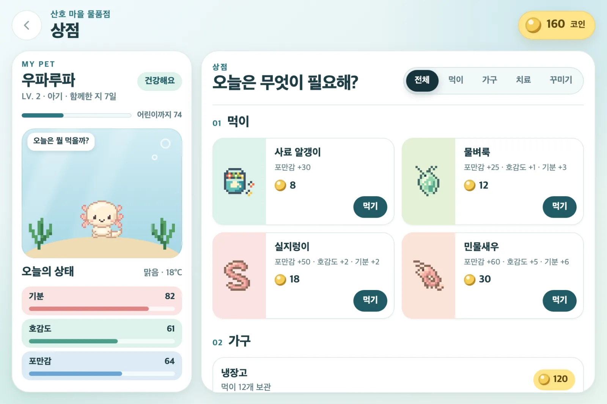
냠냠 먹이 주기
상점에서 사료, 물벼룩, 실지렁이, 민물새우를 사서 주면 냠냠 먹어요. 먹이마다 포만감과 호감도가 다르게 올라요.
바탕화면 물속에 사는 우파루파를 키우는 macOS · Windows 앱이에요. 먹이를 주고, 같이 놀고, 집과 모습을 꾸밀 수 있고, 오늘 날씨도 알려 줘요.

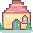
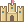
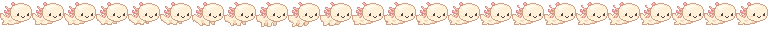


상점에서 사료, 물벼룩, 실지렁이, 민물새우를 사서 주면 냠냠 먹어요. 먹이마다 포만감과 호감도가 다르게 올라요.
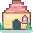
집을 우클릭해 '집으로 보내기'를 누르면 문이 열리고 쏙 들어가 쉬어요. 3분 동안 자리를 비우면 알아서 집에 가요.
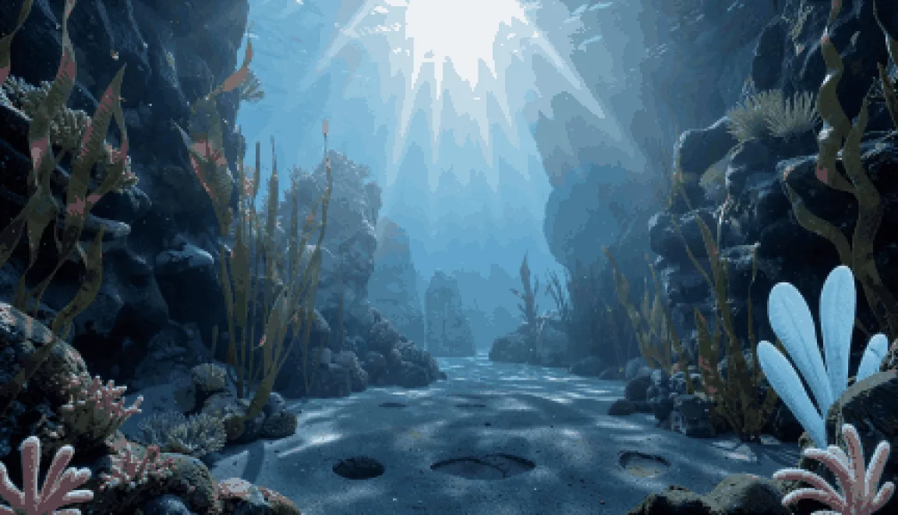
먹이, 쓰다듬기, 놀이로 경험치가 쌓이면 레벨이 오르고 아기, 어린이, 어른 순서로 커져요. 어른이 더 자라면 50가지 변신 가운데 하나가 되고, 3일 뒤에 계속 같이 지낼지 방생할지 골라요.
커서로 우파루파 몸을 쓱쓱 문지르면 좋아해요. 호감도와 코인이 조금씩 올라요(하루 12번까지).

기분이나 포만감이 너무 낮으면 아플 수 있어요. 약을 먹이거나 집에서 푹 쉬게 하면 나아요.
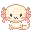
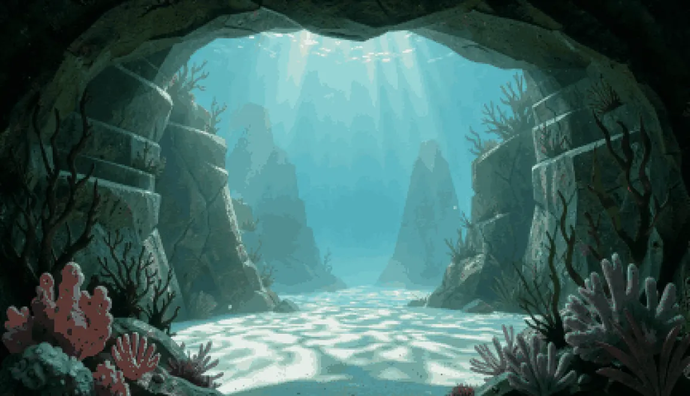
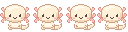
우파루파가 바탕화면 물속을 스스로 돌아다녀요. 살랑살랑 헤엄치기도 하고, 뒤뚱뒤뚱 걷기도 해요.
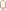
공을 던지면 통통 튕기고, 숨바꼭질하면 바위 뒤에 쏙 숨어요. 방울도 톡 터트리고, 가끔은 낙서도 해요.

우파루파를 누르면 오늘 날씨와 기온을 말풍선으로 알려 줘요. 비가 오는 날에는 우산을 챙기라고도 해요.
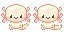
Claude Code나 터미널 창 위에 올려 두면 타자에 맞춰 톡톡 박자를 맞춰요. Claude Code가 대답을 끝내면 깡충 뛰고 '!'로 불러 줘요.
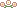

류시, 화이트 알비노, 멜라노, 형광 모프 중에 고르거나, 색과 무늬를 직접 칠해요.
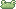
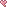
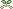
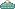
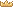
모자, 머리띠, 헤드폰 같은 머리 장식을 씌워 줘요. 원래 장식을 칠해 고치거나 직접 그려도 돼요.

33×33칸 판에 붓으로 집을 그려서 바탕화면에 놓을 수 있어요. 그린 집은 모아 두고 바꿔 쓸 수도 있어요.
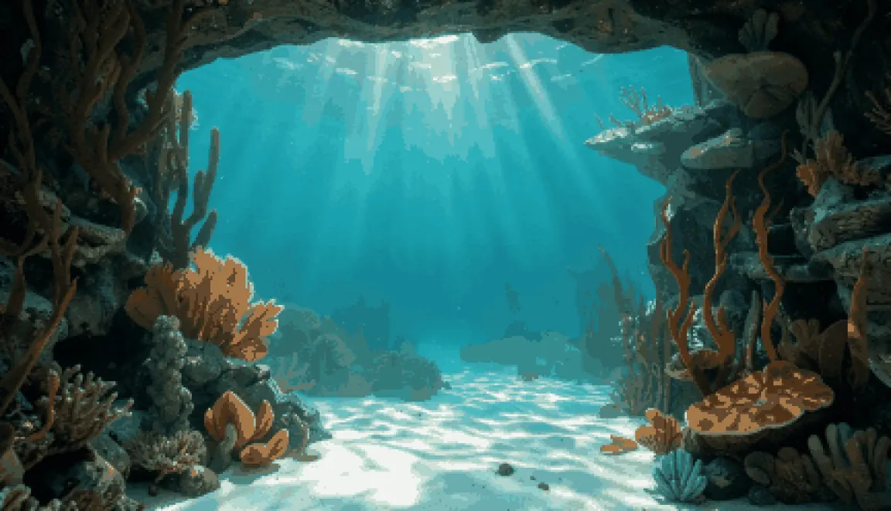
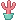
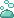
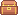
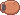
작은 성, 보물상자, 진주 조개 같은 소품을 코인으로 사서 바닥에 놓아요. 끌어서 옮기고 크기도 바꿀 수 있어요. 소품을 직접 그리거나 원래 그림을 고칠 수도 있어요.

배경 5가지나 내 바탕화면을 골라요.
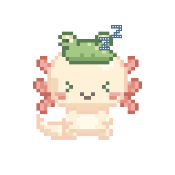
밤 10시부터 아침 7시 사이에 90초 동안 혼자 두면 눈을 감고 쿨쿨 잠들어요.
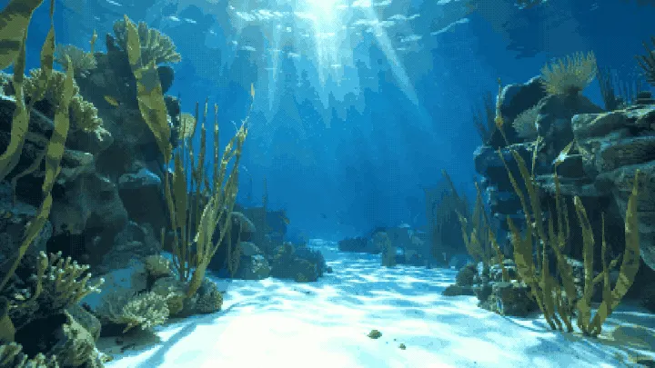
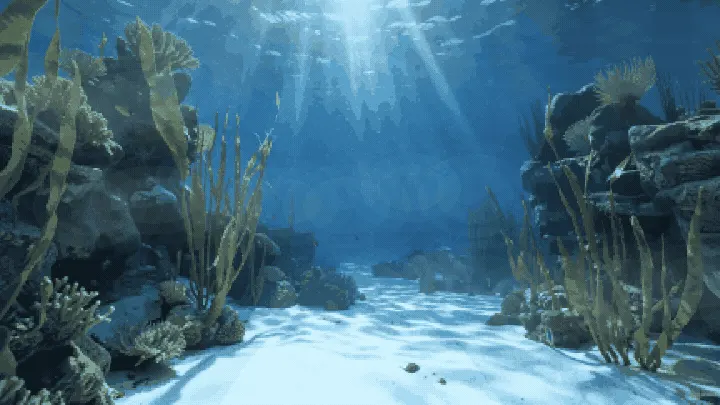
지금 있는 곳의 날씨에 맞춰 바탕화면에 햇살, 비, 눈, 안개가 나타나요. 밤이 되면 바다도 어두워져요.
우파루파 도트 그림부터 바탕화면에 붙어 있는 창까지 한 달쯤 걸려 만들었어요. 자동 검사 955개를 통과했고, macOS 설치본에서도 잘 돌아가는 걸 확인했어요. 아직 내려받는 곳은 없어요.